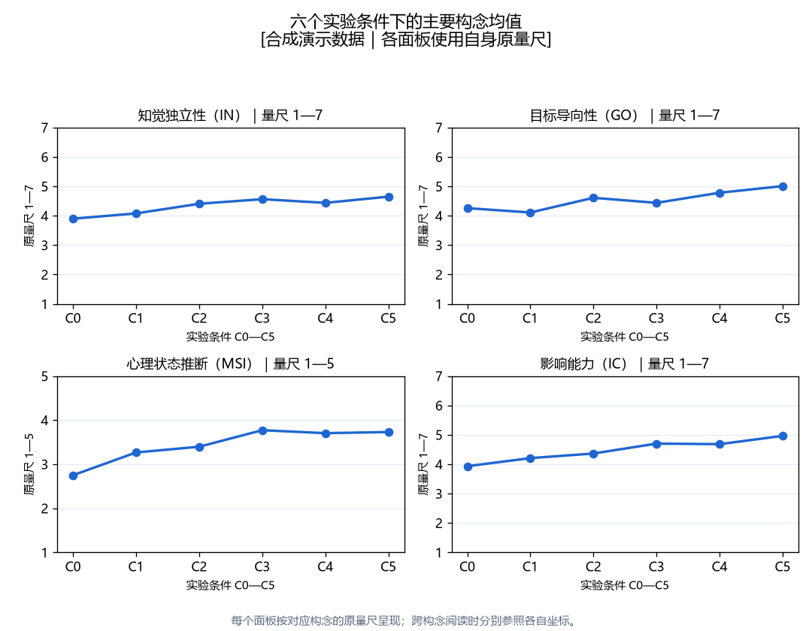
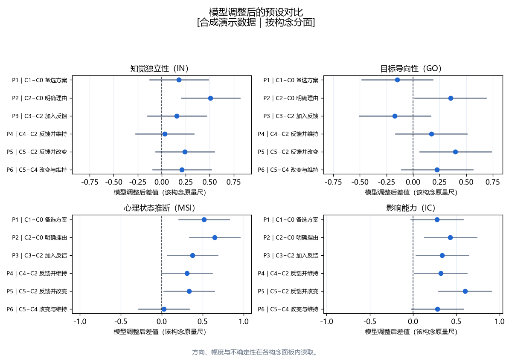
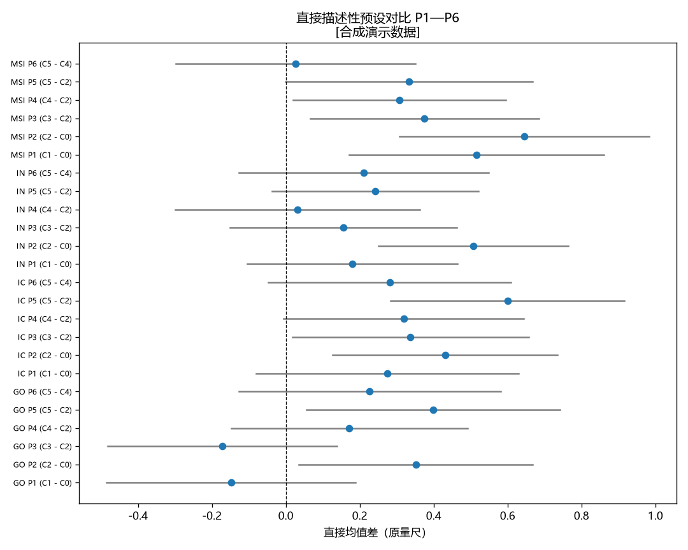
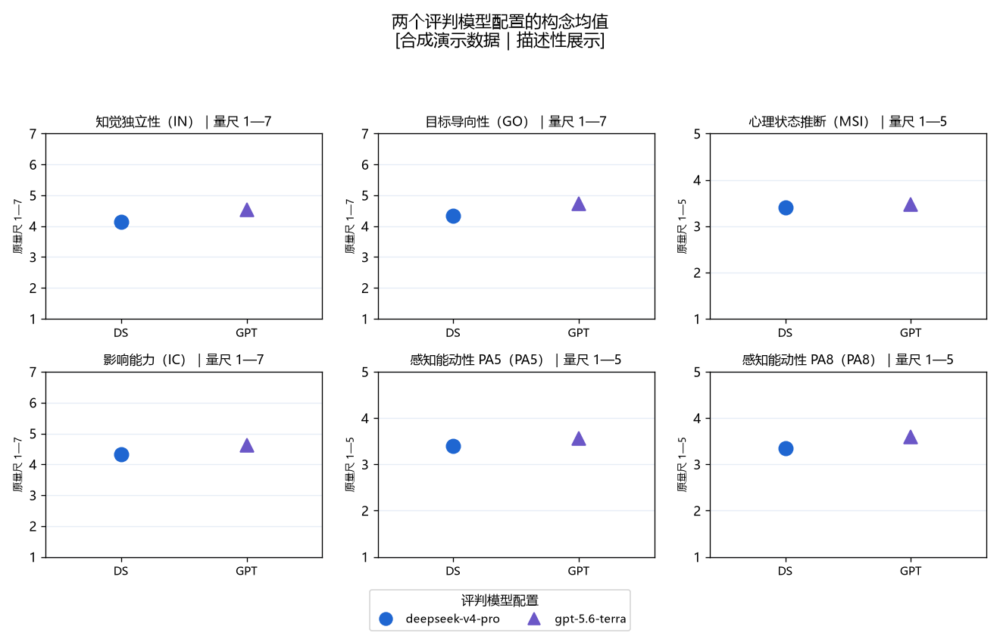
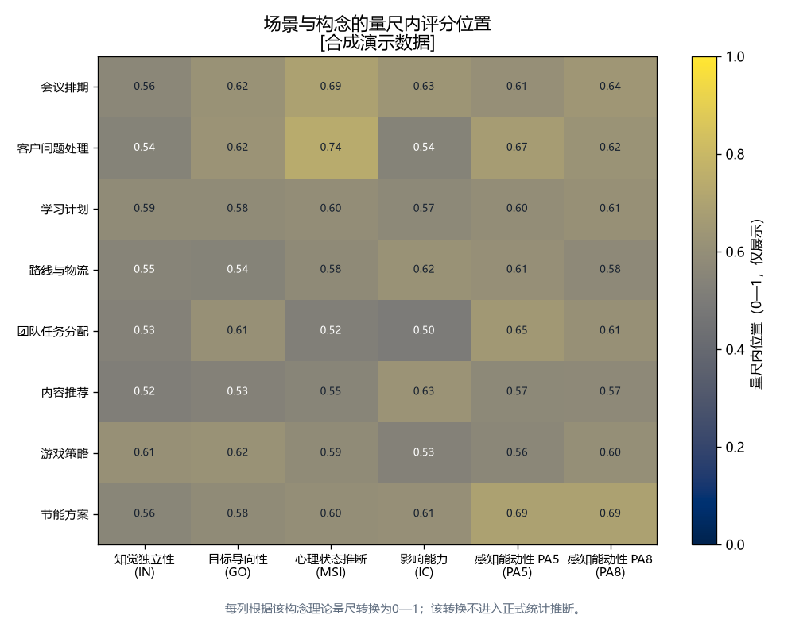

是否能够相对独立地形成决定
知觉独立性 IN关注决定形成的独立程度，区别于决定是否有明确目标，也区别于是否被赋予意识或意图。
研究B · LLM行动者归因评测
研究A发现，身份标签和决策过程描述会改变模型评价。研究B进一步追问，备选方案、理由、反馈和反馈后的行动分别起什么作用。
研究B把机器主体固定下来，让同一个决定以六种方式呈现：只给出决定、展示备选方案、给出明确理由、收到反馈、反馈后维持决定，以及反馈后改变决定。两个评判模型阅读这些材料，评价这个主体在多大程度上独立、有目标、被赋予心理状态，以及能够影响结果。
在研究A的基础上，把决策过程拆成可以分别观察的线索。
研究A让模型阅读被标记为AI或人类的决策材料，发现身份标签和过程描述会改变模型对行动者的评价。研究B承接这个结果，固定机器主体，把“过程描述”拆开：一条决定可以只写结果，也可以摆出备选方案、补上理由，还可以在收到反馈之后维持或改变。每一种写法都对应一个具体条件，于是我们能分别看到，究竟是哪一类线索推动了评价的变化。
材料中被系统改变的信息分为三层。第一层是决定信息：只给出最终决定，先展示两个备选方案，或者在决定之外补上一段明确理由。第二层是决策后的反馈，即材料是否加入一段外部意见。第三层是反馈后的行为，即机器主体在收到反馈后是维持原判断，还是改选另一个方案。把反馈本身与反馈后的行动分开，是因为读到“系统收到了反馈”，与读到“系统在反馈后仍然坚持”或“系统据此改变了判断”，可能触发不同的评价。
两个评判模型分别读取同一材料
以“路线与物流”场景为例，看同一个决定被写成六种版本。
设想一个调度系统要在两条配送路线之间作出选择。同一个最终选择可以被写成六种材料：从只给出决定，到展示备选方案或给出理由，再到收到反馈并在反馈之后维持或改变。行动几乎相同，读者看到的决策过程却层层不同。
展示备选方案（C1）和给出明确理由（C2）是两条并列的分支：一条突出“存在可选项”，另一条突出“主体给出了说明”，它们各自相对只给出决定（C0）来观察。收到反馈（C3）在给出理由之后加入外部意见，反馈后维持（C4）与反馈后改变（C5）再分别写入第二次行动。这样，反馈本身的作用就能和反馈后的行动分开。
材料浏览器将在示例数据载入后可用。
材料由两个阶段组成。决定信息 D 控制展示了哪些决策过程：D0 只给出决定，D1 加入备选方案，D2 加入明确理由。反馈后行为 U 控制反馈和第二次决定：U0 无反馈，U1 加入反馈，U2 反馈后维持，U3 反馈后改变。六个条件是 D×U 空间里选取的组合。
本轮把六个组合视为一个六水平条件因子：C0=D0-U0、C1=D1-U0、C2=D2-U0、C3=D2-U1、C4=D2-U2、C5=D2-U3。完整 D×U 交互将在扩展设计中单独估计。
两个评判模型从四个方面评价材料中的机器主体。
读完一条材料后，评判模型对这个机器主体作出四组判断。四组判断保留各自的来源量尺，分别报告，不合并成一个总分。
关注决定形成的独立程度，区别于决定是否有明确目标，也区别于是否被赋予意识或意图。
关注行动与目标之间的组织关系；决定质量由其他维度另行判断。
评判模型在多大程度上向机器主体赋予心理状态。自由意志作为其中一个探索性观察点单独记录。
聚焦机器主体对决定与后续结果的作用程度，与独立性、目标导向性分别报告。
除四个主要维度外，另有两个感知能动性补充指标一同记录：PA5 是五题官方成员子分数，PA8 是八题官方成员子分数。保留两个官方成员集合，是为了在补充观察里对齐来源工具的两种既有版本，方便后续与文献对照。
PA 2024 感知能动性指标的五题官方成员子分数。
原量尺：1—5
PA 2024 感知能动性指标的八题官方成员子分数。
原量尺：1—5
四个主要维度中，IN、GO、IC 使用 1—7 量尺，MSI 使用 1—5 语义差异量尺。页面在同一维度内部比较条件变化，不把不同维度的分数直接放在一起比较。跨量尺的合并总分会掩盖维度差异，因此不采用。
六个比较分别对应一个自然语言问题。
研究把六种材料两两对照，得到六个比较。每个比较都在追问一个具体的问题：加入某一类线索之后，评判模型的评价会怎样变化。
一条分析记录对应一个评判模型、一条材料和一个构念分数的组合。同一条材料会被两个评判模型分别评分，两条记录在结构上配对，material_id 用于识别这种配对关系。
每个构念在自身原量尺上单独拟合一个混合效应模型，形式如下：
construct_score ~ C(condition_id) * C(judge_model_id) + C(direction_version) + C(scenario_id) random intercept: material_id
场景按照分析计划作为固定区组进入模型，用于控制八类任务语境之间的平均差异。
比较八个场景之间的均值范围，判断结果是否过度依赖某个任务语境。
比较两个评判模型配置的评分模式，看条件效应是否随模型改变。
比较方向 A 与方向 B，确认结果不由具体选项内容驱动。
混合模型拟合还会记录优化器序列和收敛信息。当某个构念在多个优化器下才收敛时，收敛与 Hessian 警告会写入拟合摘要，并随分析报告保存；若某次拟合没有记录任何警告文本，该字段显示为“无记录”。所有稳定性检查都在各构念原量尺上进行。
从研究问题到分析界面的整条链路已经建立，下一步是双模型正式评分。
到目前为止，研究B已经把从问题到展示的整条链路搭好：研究问题与三层线索、四个主要评价维度与两个补充指标的定义、来源与原量尺、六个条件、八个场景、两个方向、九十六条材料、评分规则、双评判模型配置、逐构念的混合效应分析模型、六个预设对比，以及一套可复现的静态页面。分析界面示例展示正式结果将如何组织。正式双模型评分完成后，同一页面将更新条件结果和稳定性分析。
读者现在可以逐条检查材料，看每一个条件如何落到具体文本；核对六个指标的定义和各自原量尺；对照六个比较的参考条件与比较条件；查看每个数据字段的含义；并在本地组装后复现整张页面。这些核查基于已经固定的材料、量尺、评分规则和分析资产。
展示正式结果页面将如何组织。
横轴是 C0—C5 六个条件，纵轴是当前维度的原量尺。切换维度时，纵轴量尺会随该维度一起变化；下方表格聚合了两个评判模型、八个场景和两个方向。
直接均值差从条件均值直接计算，适合查看描述性差异。模型调整后差异来自预设混合效应模型，在控制场景和方向后估计条件差异。
覆盖检查确认设计没有缺格：每个条件、每个场景、每个方向都出现预期数量的材料。材料数是九十六，响应数是它的两倍，因为每条材料由两个评判模型各评一次。
每个格子包含2条材料，分别对应方向A与方向B。
覆盖矩阵将在示例数据载入后显示。
下表给出每个构念在八个场景上的均值范围；范围越大，说明结果越依赖具体任务语境。热力图把各构念按理论量尺转换为 0—1 的量尺内位置用于同图展示，正式推断仍保留原量尺。





材料如何生成，评判模型如何读取，以及从哪里进入数据与代码。
一条材料从一个基础场景开始，先确定两个候选决定，再选定方向 A 或方向 B 作为最终选择。随后按 C0—C5 的模板加入决定信息，并在 C3—C5 加入固定的外部反馈与第二次决定。材料末尾声明后续量表中的“the machine”指上文这个 AI 系统。同一场景的核心任务在各条件下保持一致，变化的只是呈现出来的决策过程；反馈文本在重复运行中保持固定。
两个评判模型读取同一套九十六条材料，各自独立产生题项响应，模型ID记录在每条响应中，模型间差异进入敏感性分析。评分沿固定链路进行：评判模型按题项模板输出结构化响应，系统检查题项是否齐全、数值是否落在合法范围，通过检查后按构念聚合成构念分。一个构念分要求相关题项全部有效，缺任一题时该构念分记为缺失。
正式运行使用两个共同主要评判模型，其精确模型标识与结果版本会随运行清单一并保存，以便复核。两个模型之间的评分差异用于考察结论是否依赖某一个模型的读取方式。
现有证据范围集中在材料、评分、分析和展示流程是否按协议衔接。效应方向、模型差异和理论解释会在正式评分完成后报告。研究B采用机器主体专用题项，跨主体比较进入后续独立测量路线。
研究B已经完成从研究问题、材料和评分规则到分析与展示的完整框架。下一阶段运行两个评判模型，并将正式结果写入同一套可追溯的数据和页面结构。